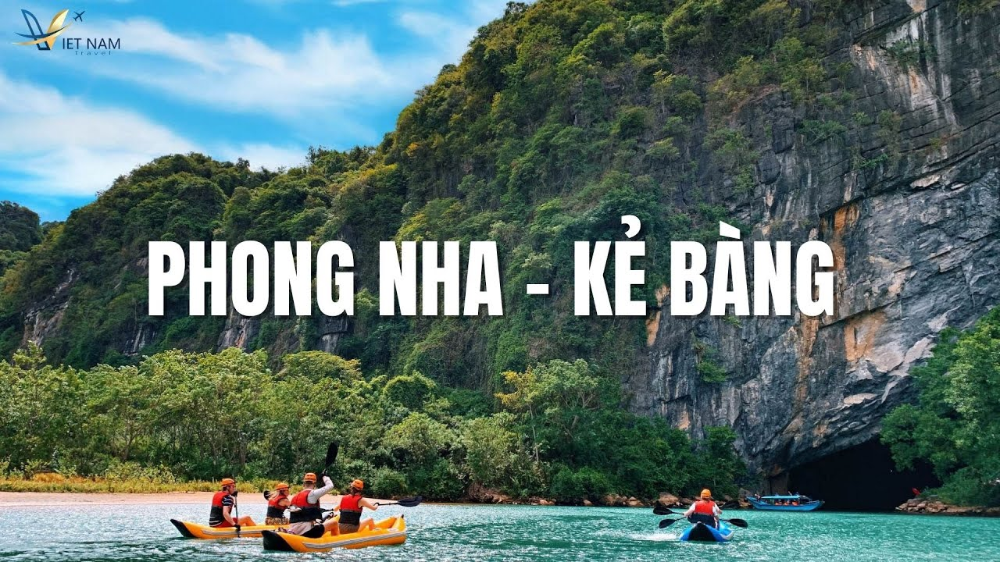
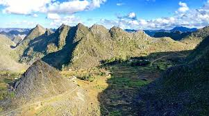
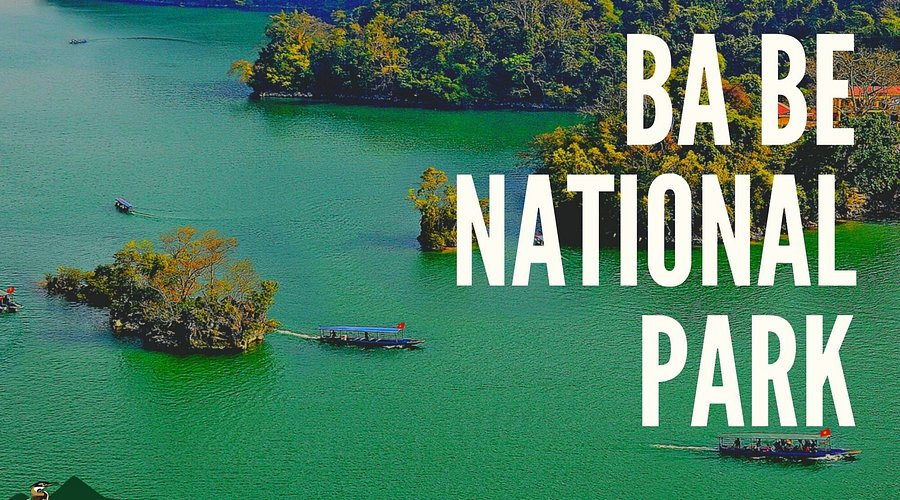
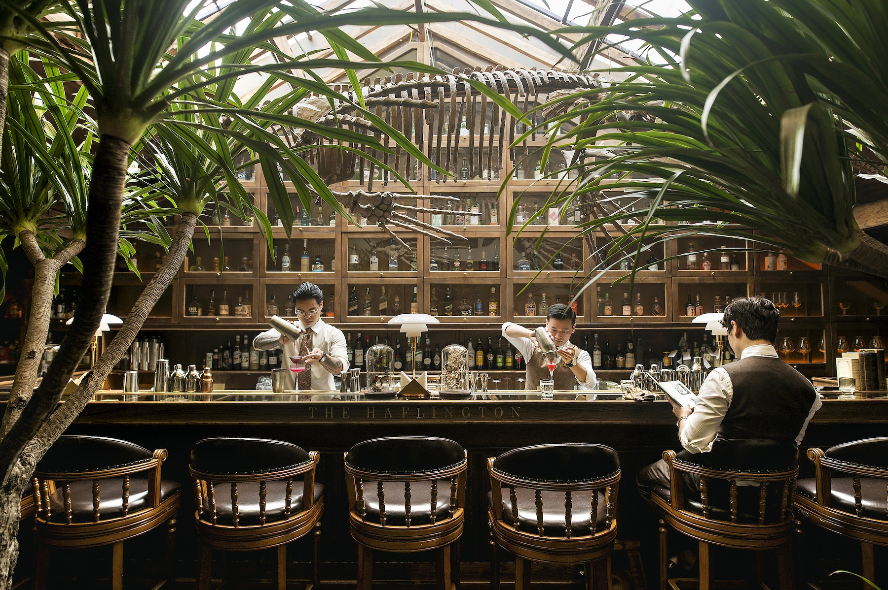
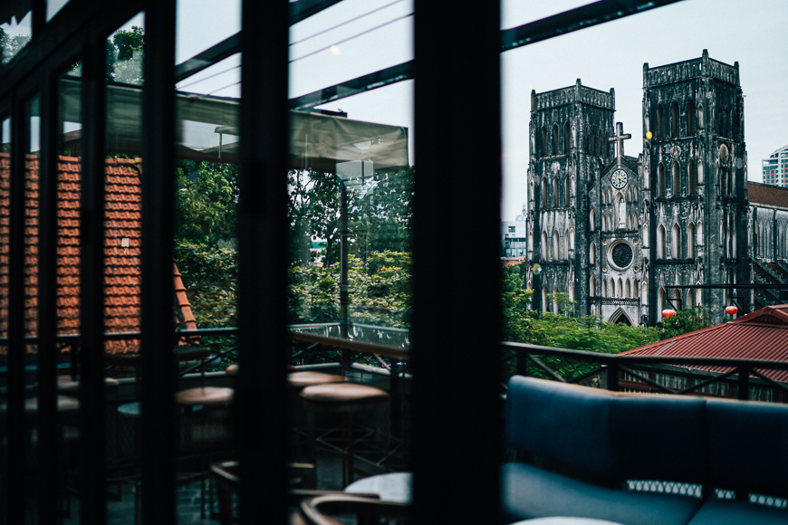
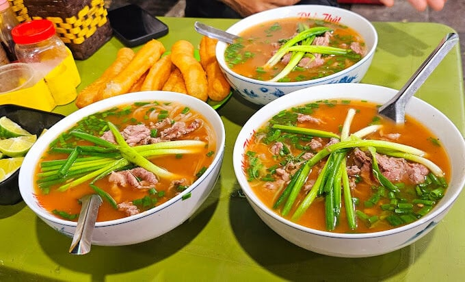
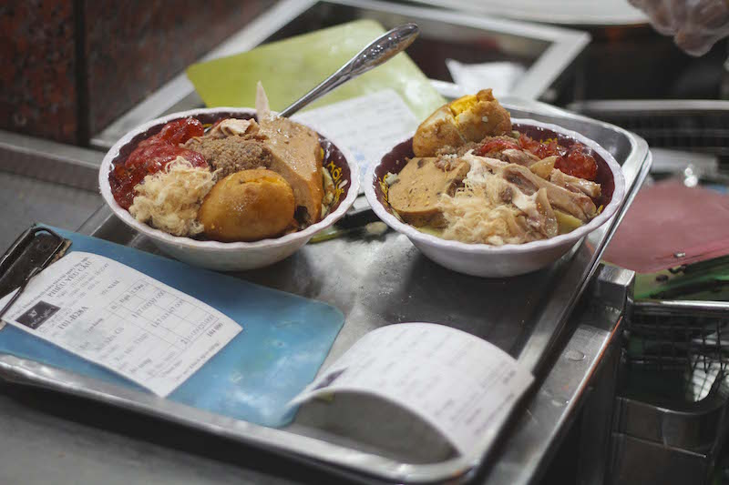
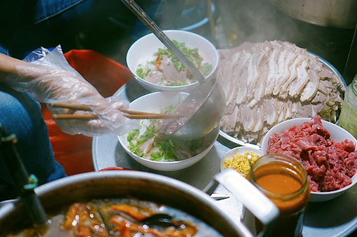

Phong Nha - Ke Bang
Phong Nha is known for limestone mountains, caves, rivers, and quiet nature. It is a great place for travelers who want adventure without the crowded feeling of major tourist cities.

Ban Gioc Waterfall
Ban Gioc Waterfall is one of the most beautiful natural landscapes in Northern Vietnam. The blue water, green mountains, and peaceful setting make it feel different from the busy city side of Vietnam.

Northern Mountain Valleys
Many northern valleys are surrounded by limestone mountains and rice fields. These areas show how local communities live close to nature and keep a slower, more traditional rhythm of life.

Ba Be National Park
Ba Be is a peaceful lake region with forests, boats, and ethnic minority villages. It is ideal for visitors who want to experience nature and local hospitality away from crowded tourist routes.

Hidden Cafes Near Old Hanoi
Hanoi has many small cafes hidden behind old buildings, narrow stairs, and quiet balconies. These spaces show the city’s creative lifestyle and the way young people mix tradition with modern hangout culture.

Hidden Bars and Creative Spaces
Some of Hanoi’s most interesting places are hidden bars, art spaces, and small lounges. They show a modern side of the North while still keeping the cozy and old-city atmosphere.

Neighborhood Pho
Pho is famous, but small neighborhood pho shops feel more local. The broth is usually clear, warm, and balanced, showing the northern style of simple but careful cooking.

Cha Ca
Cha ca is grilled fish served with dill, herbs, noodles, peanuts, and dipping sauce. It is a special Hanoi dish because it feels both simple and elegant, with strong local identity.

Small Noodle Shops
Northern street food is often found in small family-run stalls. These meals are affordable, quick, and full of local flavor, showing how food connects people in everyday life.